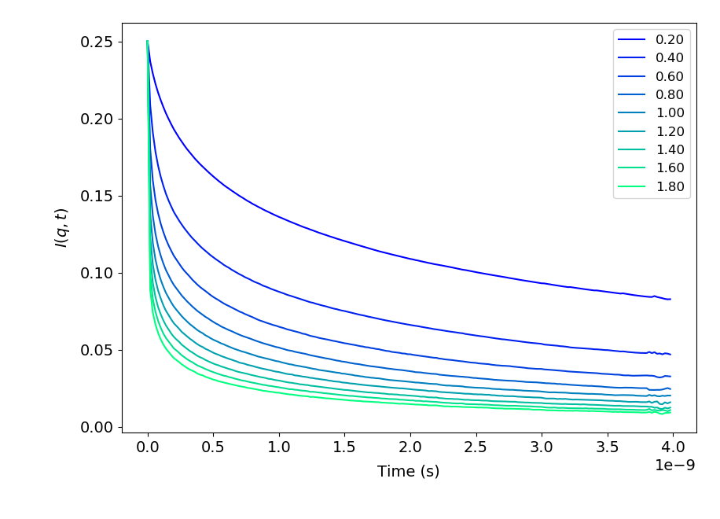
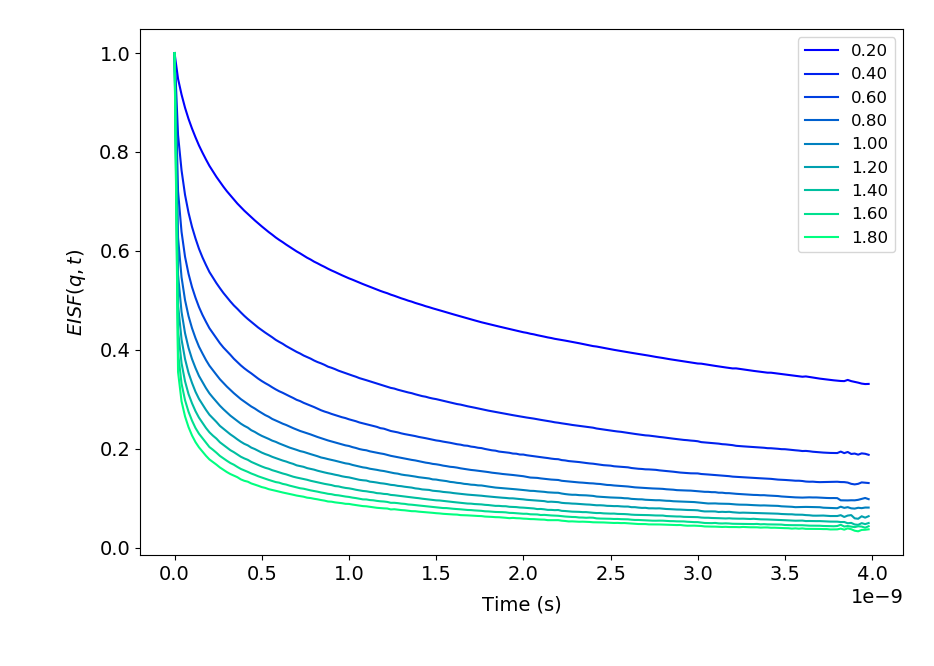
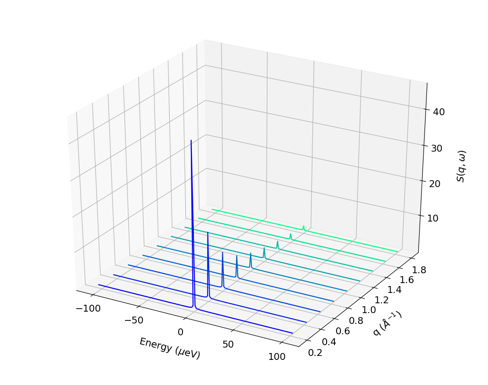
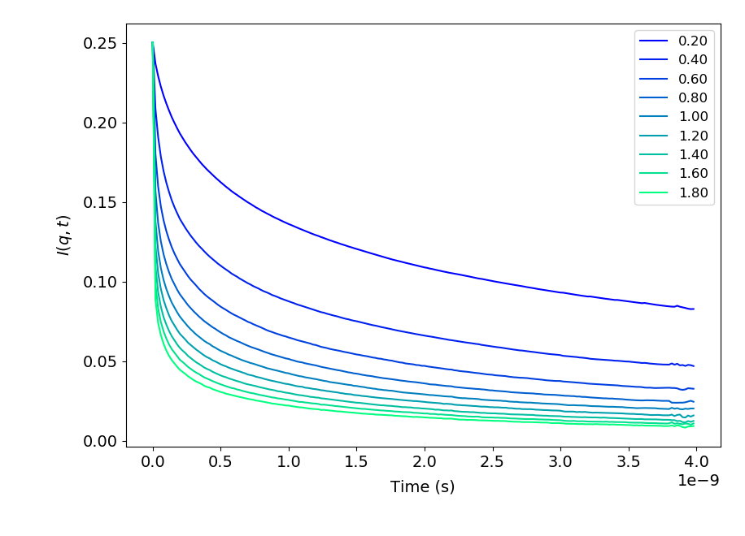
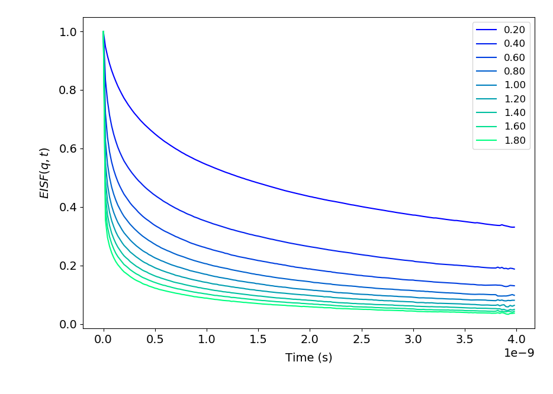
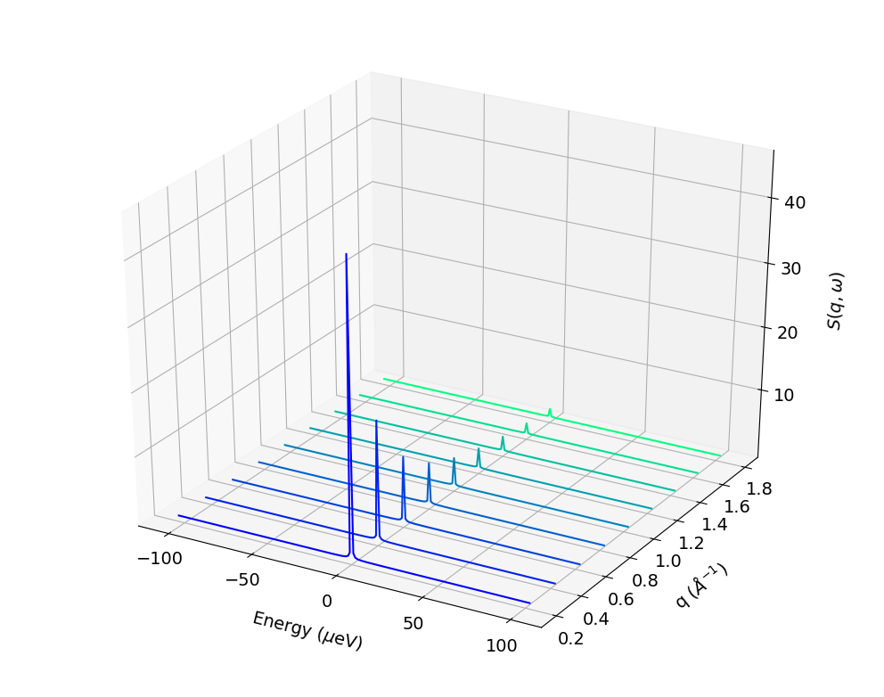

NAMDAnalyzer’s documentation¶
NAMDAnalyzer¶
Python based routines for molecular dynamics simulation analysis from NAMD
Installation:¶
Unix and Windows¶
To install it within your python distribution, use
make [build] (for openMP version) or [build_cuda] (for CUDA accelerated version - recommended)
make install
or
python setup.py [build, build_cuda]
python setup.py install
Start the interpreter:¶
Initialization of the ipython console can be done using the following command:
ipython -i <path to NAMDAnalyzer.py> -- <list of files to be loaded> [-s stride]
Options:
- -s –stride
use to skip frames when loading a .dcd file. For instance if “-s 5” is provided, only the frames that are multiples of 5 will be loaded.
Usage:¶
The program is organized on a master class contained in NAMDAnalyzer.Dataset.
Open log file and plot data¶
To analyze log file, the following can be used:
import NAMDAnalyzer as nda
data = nda.Dataset('20190326_fss_tip4p_prelax.out') #_Import log file
#_Another log file can be append to the imported one using data.logData.appendLOG() method
#_To plot data series using keywords given in data.logData.etitle, removing first 500 frames of minimization
data.logData.plotDataSeries('TEMP KINETIC TOTAL', begin=501)
#_To plot data distribution
data.logData.plotDataDistribution('KINETIC', binSize=20)
#_Data can be fitted with any model using
data.logData.plotDataDistribution('KINETIC', fit=True, model=your_model_function, p0=init_parameters)
Load trajectories, selection, and analysis¶
import NAMDAnalyzer as nda
d = nda.Dataset('psfFile.psf', 'dcdFile.dcd')
#_Trajectories can be append to already loaded ones using either d.appendDCD('dcdFile.dcd')
#_or d.appendCoordinates('pdbFile.pdb').
#_To compute RMSD per atom for molecules aligned in all frames
d.getRMSDperAtom(selection='protein and segname V1', align=True, frames=slice(0, None))
#_To compute and plot RMSD per atom for molecules aligned in all frames
d.plotRMSDperAtom(selection='protein and segname V1', align=True, frames=slice(0, None))
#_To compute radial pair distribution function for water within 3 angstrom of a protein region
r, pdf = d.getRadialNumberDensity( 'name OH2 and within 3 of protein and resid 40:80',
'name OH2 and within 3 of protein and resid 40:80',
dr=0.1, maxR=15, frames=range(0,1000,5) )
import matplotlib.pyplot as plt
plt.plot(r, pdf)
plt.xlabel('radius r [$\AA$]')
plt.ylabel('$\\rho (r)$')
plt.show()
#_To plot averaged distances between a residue and the rest of the protein using a parallel plot
d.plotAveragedDistances_parallelPlot('protein and resid 53', 'protein', maxDist=10, step=2)
#_To plot the same distances but using a chord diagram
cd = d.plotAveragedDistances_chordDiagram('protein and resid 53', 'protein', maxDist=10, step=2)
cd.show()

Analysis of rotations¶
import NAMDAnalyzer as nda
from NAMDAnalyzer.dataAnalysis.Rotations import Rotations
d = nda.Dataset('psfFile.psf', 'dcdFile.dcd')
#_To analyze O-H1 water vectors for O being within 3 angstrom of protein region
rot = Rotations(d, 'name OH2 and within 3 of protein and resid 40:80',
'name H1 and bound to name OH2 and within 3 of protein and resid 40:80',
axis='z', nbrTimeOri=20)
rot.compRotationalRelaxation()
rot.compOrientationalProb()
rot.plotRotationalRelaxation()
rot.plotOrientationalProb()

{kind=link}
{kind=link}
{kind=link}
{kind=link}
{kind=link}
{kind=link}
Analysis of hydrogen bonds¶
import NAMDAnalyzer as nda
from NAMDAnalyzer.dataAnalysis.HydrogenBonds import HydrogenBonds
d = nda.Dataset('psfFile.psf', 'dcdFile.dcd')
#_To analyze hydrogen bonds auto-correlation
#_The 'hydrogens' argument is optional, if None, they are obtained from hydrogens bound to donors
#_maxTime is tha maximum number of frame, maxR is the maximum distance for acceptor, hydrogen distance
#_step is the frame increment from origin to maxTime, minAngle is the minimum angle to accept hydrogen bond
#_between acceptor-hydrogen and donor-hydrogen vectors
hb = HydrogenBonds(d, donors='name OH2', acceptors='name OH2', hydrogens=None, maxTime=50
nbrTimeOri=20, step=1, maxR=2.5, minAngle=130)
#_For continuous auto-correlation (default if 'continuous' not given)
hb.compAutoCorrel(continuous=1)
#_For intermittent auto-correlation
hb.compAutoCorrel(continuous=0)
#_To plot the result
hb.plotAutoCorrel(corrType='continuous')
hb.plotAutoCorrel('intermittent')
{kind=link}
{kind=link}
Mean-squared displacement and neutron backscattering¶
import NAMDAnalyzer as nda
from NAMDAnalyzer.dataAnalysis.backscatteringDataConvert import BackScatData
d = nda.Dataset('psfFile.psf', 'dcdFile.dcd')
#_Defines some q-values for incoherent scattering function
qVals = [0.2, 0.4, 0.6, 0.8, 1, 1.2, 1.4, 1.6, 1.8]
bs = BackScatData(d)
#_To compute MSD for non exchangeable hydrogens in protein for increasing time steps,
#_without center of mass motion
msd = []
for frame in range(0, 200, 5):
bs.compMSD(frameNbr=frame, selection='protNonExchH', alignCOM=True)
msd.append( bs.MSD )
import matplotlib.pyplot as plt
times = np.arange(0, 200, 5) * d.timestep * d.dcdFreq[0:200:5] * 1e9
msd = np.array(msd)
plt.plot(times, msd[:,0])
plt.xlabel('Time [ns]')
plt.ylabel('MSD [$\AA^{2}$]')
plt.show()
#_To compute and plot incoherent intermediate function, EISF and inoherent scattering
#_function for water hydrogens with 200 time steps
bs.compScatteringFunc(qVals, nbrTimeOri=50, selection='waterH', alignCOM=True, nbrTS=200)
bs.plotIntermediateFunc()
bs.plotEISF()
bs.plotScatteringFunc()
Outputs of previous code:¶
 





{kind=link}
{kind=link}
{kind=link}